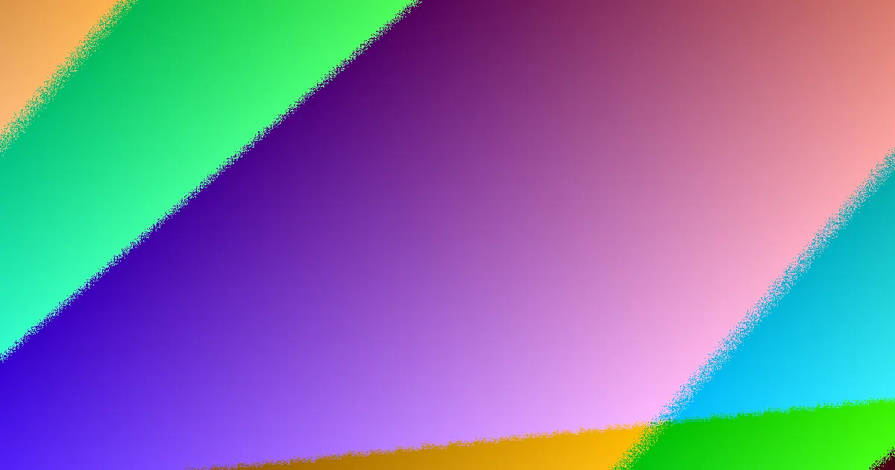

In Toowoomba, fencing work valued at $3,300 or more requires a QBCC licensed contractor, barring exemptions. Boundary fences are typically dividing fences, with neighbours usually sharing costs for sufficient structures. Accepted development height is up to 2m above natural ground, while higher fences and pool barriers need specific approvals. Neighbour notices have a one-month agreement period before QCAT proceedings can commence. When comparing contractors, focus on quote detail, boundary consent, site access, and the correct approval pathway.
For local buyers, fencing contractors toowoomba planning guide understanding the practicalities of engaging local fence contractors is crucial
Fencing Contractors Toowoomba Planning Guide Explained
A useful fencing quote from a Toowoomba contractor is described as a measured site visit followed by a written quote that spells out material, run length, old fence removal, and access. That matters because a boundary job is hard to compare when one price includes removal and awkward access while another only prices the new panels. Before choosing between local fence contractors, put the same information in front of each one. Give the run length, suburb or postcode, likely material, whether the old fence must be removed, whether a gate is included, and whether a neighbour will share the cost. If the job involves a pool barrier, retaining wall, corner block, or commercial yard, state that early because the approval and compliance questions can change the scope. Ask whether the quote is based on an actual site measure. Ask whether each owner can be invoiced separately on a shared dividing fence. Ask whether repair is still economical before pricing full replacement.
Choosing the Fence Type by Job
Colorbond is a popular boundary option for Toowoomba blocks because it is fast to erect, needs no painting, and comes in a colour range that suits brick and render. Timber paling still suits character streets, while lapped and capped timber is the step up when gaps are the issue. Other choices solve different problems. PVC fencing removes painting from the maintenance cycle. Aluminium slat fencing reads more like a modern street frontage or courtyard screen than a full privacy wall. Glass and aluminium pool fencing are compliance decisions before style decisions. Chain wire and tubular steel are named for business premises, schools, and compounds, and gates or automation need to be planned around the fence line they hang from.
Neighbour, Boundary and Notice Questions
If a fence sits on the boundary, it is treated as a dividing fence under Queensland process. Adjoining owners generally contribute equally to a sufficient dividing fence for residential land, with that described as roughly 0.5m to 1.8m high and made substantially from prescribed materials such as palings, chain wire, metal panels, or brick. The practical issue is upgrades. If one owner wants more than a sufficient fence, the extra cost can fall to that owner. A written quote is useful because it gives both sides the same scope to discuss. Where agreement does not happen, a notice to contribute is the formal step, naming the land, fence line, work, and estimated cost, with at least one written quotation attached. If there is no agreement within one month, either owner can apply to QCAT within two months of the notice.
Height, Pools and Approval Triggers
Fence height needs to be checked against natural ground level. A fence up to 2m above natural ground level is generally accepted development in Queensland. Above 2m it becomes building work and needs approval from a certifier. A retaining wall can change the calculation because the wall and fence are measured together. Corner blocks also deserve early attention because sight line truncations can affect what is acceptable near an intersection. Pool fencing is a separate compliance category. Pool barriers are built to the Queensland pool safety standard, so the decision is not only whether glass or aluminium looks better. It is whether the barrier is planned as a compliant pool fence from the start. These checks should happen before posts are ordered. They are easier to resolve on paper than after a panel height, gate swing, or pool barrier line has already been assumed.
- Measure and Define. Note the approximate run length, material preference, gate needs, access limits, and whether the old fence must be removed.
- Speak to the Neighbour. For a boundary fence, agree on scope and cost sharing before quotes are requested.
- Obtain Detailed Quotes. Request written quotes that specify materials, run length, old fence removal, site access, and potential neighbour contributions.
- Compare Quotes Line-by-Line. Ensure quotes cover the same scope, including site measure basis, removal, access difficulty, separate invoicing, and gate/automation planning.
- Check Approvals. Verify height regulations, pool barrier compliance, and any specific requirements for corner blocks or retaining walls before ordering materials.
Common questions
What is the QBCC licensing requirement for fencing in Toowoomba? Any paid fencing work valued at $3,300 or more requires a QBCC licensed contractor, unless a specific exemption applies.
How are boundary fences typically handled between neighbours? Boundary fences are usually treated as dividing fences. Adjoining owners generally contribute equally to a sufficient dividing fence, typically between 0.5m and 1.8m high, made from standard materials.
What are the height restrictions for fences in Toowoomba? Fences up to 2m above natural ground level are generally accepted development. Anything higher requires approval from a certifier. Retaining walls can affect this measurement.
fencing contractors toowoomba planning